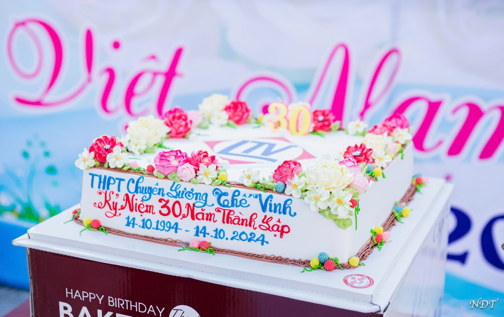
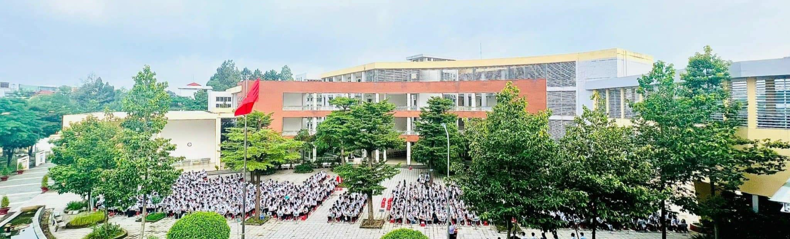

Ba Thập Kỷ Hội Ngộ Rực Rỡ Sắc Áo Chuyên Lương Thế Vinh
Khoảnh khắc hội tụ các thế hệ học sinh trong không khí trang trọng và tự hào trường chuyên Đồng Nai.

Giải Bóng Đá Học Sinh 2024
Nhiệt huyết thể thao và tinh thần fair-play trên sân cỏ nhân tạo.

Không Gian Thể Thao Ngoài Trời
Sân bãi xanh mát phục vụ rèn luyện thể chất và sinh hoạt tập thể.
Kỷ Niệm 30 Năm Thành Lập
Mốc son ba thập kỷ (1994–2024) kết nối các thế hệ nhà giáo và cựu học sinh Lương Thế Vinh vẻ vang.
Hội Xuân Đón Tết Cổ Truyền
Không gian văn hóa dân gian, trang trí cổng trại, ẩm thực truyền thống và chuỗi trò chơi gắn kết bạn bè.
Đêm Nhạc "LTV Tôi Yêu"
Sân khấu bùng nổ tài năng nghệ thuật, ca hát, vũ đạo và hòa tấu nhạc cụ do Đoàn trường chủ trì.
Giải Bóng Đá Học Sinh LTV
Tranh tài sôi nổi giữa các khối chuyên, thắt chặt tình đồng đội trên sân bóng đá cỏ nhân tạo hiện đại.
Bức Tranh Tổng Thể Đời Sống Học Sinh Chuyên
Hình ảnh học sinh THPT Chuyên Lương Thế Vinh không chỉ gắn liền với những giờ miệt mài bên trang sách hay phòng thí nghiệm, mà còn hiện diện đầy sức sống qua các hoạt động phong trào, nghệ thuật và kết nối cộng đồng.
Nhà trường luôn coi giáo dục toàn diện là kim chỉ nam: bồi dưỡng kiến thức khoa học vững chắc song song với rèn luyện thể chất, thẩm mỹ, kỹ năng lãnh đạo và tinh thần phụng sự xã hội. Mỗi cá nhân khi bước chân vào ngôi trường đều được khích lệ xây dựng bản sắc riêng trong sự gắn kết chặt chẽ với tập thể.
Tự Chủ & Sáng Tạo
Khuyến khích học sinh chủ động đề xuất ý tưởng, tổ chức các dự án văn hóa và phong trào tự quản đầy sáng tạo.
Gắn Kết & Đồng Đội
Xây dựng tinh thần đoàn kết bền chặt qua các giải đấu thể thao, hội trại truyền thống và đêm hội âm nhạc bùng nổ.
Trách Nhiệm Cộng Đồng
Lan tỏa lòng nhân ái qua các chương trình thiện nguyện, hỗ trợ học sinh có hoàn cảnh khó khăn và đóng góp cho xã hội.
Những Sự Kiện và Ngày Hội Học Đường Lớn
Đời sống tinh thần tại trường được bồi đắp qua những dấu mốc sự kiện giàu cảm xúc, nơi các thế hệ thầy và trò cùng nhau chia sẻ niềm tự hào chung:

Đại Lễ Kỷ Niệm 30 Năm Thành Lập Trường (1994–2024)
Dấu mốc ba thập kỷ hội ngộ đầy xúc động của các thế hệ nhà giáo, cựu học sinh và học sinh đang theo học. Chương trình diễn ra trang trọng với lễ mít tinh truyền thống, phát hành kỷ yếu 30 năm và những không gian triển lãm lịch sử trường.
Hội Xuân Đón Tết & Không Gian Văn Hóa Dân Gian
Mỗi dịp xuân về, sân trường trở thành không gian lễ hội rực rỡ sắc màu. Các chi đoàn tự tay thiết kế cổng trại, trang trí góc lớp mang đậm hồn cốt Tết cổ truyền, tổ chức các gian hàng ẩm thực dân gian và chuỗi trò chơi gắn kết tình bạn bè.

Đêm Văn Nghệ "Lương Thế Vinh Tôi Yêu"
Sân khấu bùng nổ nhiệt huyết tuổi trẻ do Đoàn trường tổ chức, nơi các tài năng ca hát, vũ đạo, hòa tấu nhạc cụ và kịch nghệ được tỏa sáng trọn vẹn, để lại những kỷ niệm thanh xuân khó phai trong lòng mỗi học sinh.
Phong Trào Thể Thao & Rèn Luyện Thể Lực
Rèn luyện thể chất luôn là một phần không thể thiếu trong hành trình phát triển toàn diện của học sinh chuyên Lương Thế Vinh. Sân bóng đá cỏ nhân tạo và khu liên hợp thể dục thể thao là nơi diễn ra các giải đấu giao lưu sôi nổi giữa các khối chuyên.
Giải Bóng Đá Học Sinh Thường Niên (2024)
Giải đấu quy tụ các đội bóng đại diện cho các khối chuyên, mang đến những trận cầu kịch tính, thắt chặt tinh thần fair-play và tình đoàn kết giữa các khóa học sinh.
- Tham gia tích cực tại Hội khỏe Phù Đổng cấp trường và cấp tỉnh.
- Các môn thể thao phát triển mạnh: Bóng đá, bóng rổ, cầu lông và cờ vua.

Môi Trường Giao Lưu, Câu Lạc Bộ & Thiện Nguyện
Hệ sinh thái câu lạc bộ phong phú với hơn 14 tổ chức học sinh đang hoạt động sôi nổi trong các lĩnh vực: ngoại ngữ (ICIS, LTV English Speaking Club), tư duy phản biện (ISDC), âm nhạc & nghệ thuật (LTV Orpheus, Lumination) và thiện nguyện vì cộng đồng (Sẻ Chia Yêu Thương).
Mỗi câu lạc bộ là một môi trường thu nhỏ giúp học sinh thực hành kỹ năng làm việc nhóm, tổ chức sự kiện và xây dựng trách nhiệm xã hội.
Ngoại Ngữ & Nghiên Cứu
Môi trường rèn luyện giao tiếp quốc tế, học thuật chuyên sâu và các dự án khoa học kỹ thuật trẻ.
Tranh Biện & Lãnh Đạo
Không gian rèn luyện tư duy phản biện sắc bén, hùng biện tiếng Anh và kỹ năng điều hành tổ chức.
Âm Nhạc & Truyền Thông
Nơi thăng hoa cảm xúc nghệ thuật, ban nhạc học sinh, nhiếp ảnh và các chiến dịch truyền thông học đường.
Thiện Nguyện & Thể Thao
Lan tỏa giá trị nhân ái qua các chuyến đi thiện nguyện vùng sâu và giải đấu thể thao gắn kết.
Khám phá chuyên sâu danh mục Câu lạc bộ
Để tìm hiểu chi tiết về mục tiêu hoạt động, cơ cấu ban chủ nhiệm và cách thức đăng ký tham gia vào từng câu lạc bộ, xin mời quý phụ huynh và học sinh đón đọc trang chuyên mục Hoạt Động & Câu Lạc Bộ Học Sinh.